1. The screen
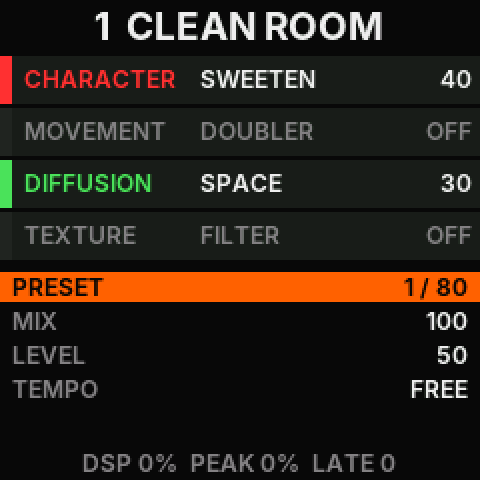
- At the top: the preset's number and name. A star after the name means that the sound differs from what its slot holds.
- Four tiles, in the order the sound passes through them, top to bottom. A tile shows the module's name, its effect, and its AMOUNT. A module that is off is dim and says OFF. One that bypass has switched says BYP.
- Five rows: the lines of the selected page. The lit line is the one the knob changes.
- The last line: the load of the processor (DSP), its peak since the sound last changed (PEAK), and the number of audio blocks that came late (LATE). It also shows the mode, or a word such as SAVED or BYPASS.
2. The modules and their effects
Each module runs one of its five effects, or is off. A module that is off keeps its effect and its settings.
| Module | Button | Effects, in the order the button steps through them | Its knobs |
|---|---|---|---|
| Character | AMP | Drive: a warm overdrive, from a touch of colour to full drive. Sweeten: equaliser, compression and a little saturation that grow together. Fuzz: a two-stage fuzz that sputters as TILT goes up. Howl: the fuzz into a resonant filter that TILT tunes. Swell: each new note fades in from silence. | AMOUNT, TILT, SENSITIVITY, VOLUME |
| Movement | MOD | Doubler: two short echoes, one a side, that widen the sound. Vibrato: a pitch wobble; DRIFT makes it uneven and wide. Phaser: sweeping notches; AMOUNT goes from 2 to 12 stages. Tremolo: a volume pulse, from soft to a hard chop. Pitch: RATE shifts by up to an octave down or up, and its centre is no shift; AMOUNT mixes the shifted sound in. | AMOUNT, RATE, DRIFT, VOLUME |
| Diffusion | DLY | Cascade: a dark echo that bends when TIME moves and runs away at full AMOUNT. Reels: a brighter, wobbly echo in the manner of tape. Space: a reverb from a small room to a very long tail; AMOUNT is its mix. Collage: a loop that records over itself; TIME sets its length. Reverse: a backwards echo; TIME sets its speed and pitch. | AMOUNT, TIME, DRIFT, VOLUME (the effect's part only) |
| Texture | CAB | Filter: one knob: below the centre it cuts highs, above it lows. STYLE makes it a plain low-pass or high-pass. Squash: a heavy compressor that distorts near the top. Cassette: wow, flutter, saturation, dull highs and hiss. Broken: a failing motor: the pitch drops and wobbles. Interference: fewer samples and bits, ring modulation, noise and stutters. | AMOUNT, STYLE, VOLUME |
MIX blends the guitar with the whole chain. LEVEL is the output level of the chain. Both are on the HOME page.
3. The controls
| Control | A press | Held |
|---|---|---|
| AMP MOD DLY CAB | Selects the module: its page shows, and the knob is its AMOUNT. Pressed again: the module's next effect, and the rows list its five effects for a moment. | 0.6 s: the module off, or on again. |
| The knob | Turned: the value of the lit line. Turned quickly, it goes in steps of 5. | |
| PUSH (the knob) | The next line. | 0.8 s: SAVE the sound to its slot. |
| HOME | The sound's page: PRESET, MIX, LEVEL, TEMPO. It also leaves ORDER and PRESETS. | Nothing. |
| FX | ORDER: then press the four module buttons in the order you want. FX again leaves the order as it was. | Nothing. |
| The right footswitch | Bypass, and engage again. It acts when the footswitch comes up. | 0.7 s: PRESETS. Held again: back. |
| The left footswitch | A tap. Two taps set the tempo. It acts when the footswitch goes down. | Nothing yet. |
| REV | A tap as well. | 0.8 s: free time, no tempo. |
| MASTER | The volume. | |
In ORDER
- Each module button you press takes the next place in the chain. The screen puts it at the top and numbers it. A module pressed twice keeps its place. The fourth press sets the order and ends ORDER.
- With the right footswitch held, a module button does something else: it chooses whether bypass leaves that module on. Its tile then says STAYS ON.
- The knob does nothing. FX, HOME, or PUSH leaves without a change to the order.
In PRESETS
- The right footswitch goes to the next slot that holds a sound, the left one to the one before. A press loads the sound at once.
- The knob goes through every slot, the empty ones too.
- AMP, MOD, DLY and CAB go to the same place in bank A, B, C and D.
- PUSH, HOME, or the right footswitch held again leaves PRESETS on the slot you are at.
4. The knob and its lines
The pedal has one knob for all sixteen settings of a sound. Select a module, and the knob is that module's. PUSH goes down the lines of the page and back to the top.
| Page | Lines, top to bottom | The line that is lit when the page opens |
|---|---|---|
| HOME | PRESET, MIX, LEVEL, TEMPO | PRESET |
| AMP | EFFECT, AMOUNT, TILT, SENSITIVITY, VOLUME | AMOUNT |
| MOD | EFFECT, AMOUNT, RATE, DRIFT, VOLUME | AMOUNT |
| DLY | EFFECT, AMOUNT, TIME, DRIFT, VOLUME | AMOUNT |
| CAB | EFFECT, AMOUNT, STYLE, VOLUME | AMOUNT |
- Every value goes from 0 to 100. TILT, SENSITIVITY, VOLUME and LEVEL are neutral at 50.
- SENSITIVITY moves the point where the Character effects break up, and the level at which Swell answers.
- DRIFT adds instability. What it does is different for each effect.
- On the EFFECT line the knob goes through the module's five effects, and on Texture's STYLE line through the filter's three styles: TILT, LOW-PASS, HIGH-PASS.
- On the PRESET line the knob goes through the presets. On the TEMPO line it sets the tempo, from 30 to 300 beats a minute. Below 30 the tempo is FREE.
5. Worked examples
The ideas for these examples come from the demo video of the instrument PALETTE is modelled on (Hologram Electronics, "Chroma Console"). The steps are PALETTE's own controls, and the pictures are PALETTE's own screen.
Choose an effect
Goal: step through a module's five effects and stop at the one you want.
- Press AMP. Character's tile lights, and the rows show its lines. Nothing in the sound has changed yet.
- Press AMP again. Character goes to its next effect. For a moment the rows list its five effects, with the new one lit.
- Keep pressing until the effect you want is lit. After the fifth, the next press is the first again.
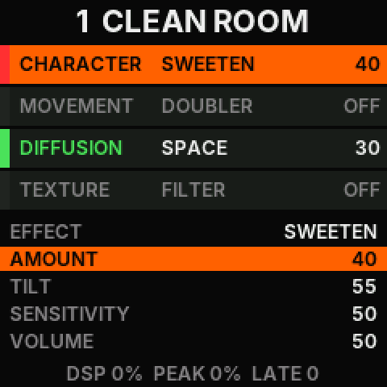
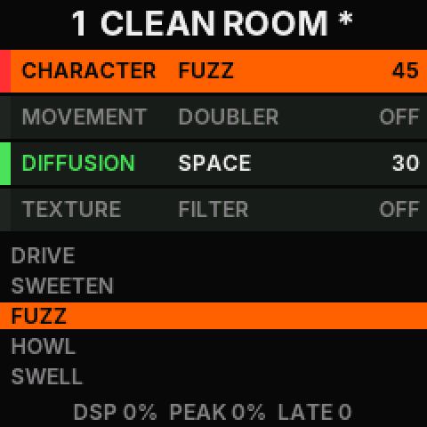
A module that is off switches on when you step its effect. The first press on another module only selects it: one knob serves four modules, so there has to be a way to reach a module without changing it.
Shape the effect with its module's knobs
Goal: set how strong an effect is, and its tone.
- Press the module's button once, for example AMP. The AMOUNT line is lit.
- Turn the knob. AMOUNT changes, on the line and on the tile.
- Press PUSH. The next line is lit: TILT for Character, RATE for Movement, TIME for Diffusion. Turn the knob.
- Press PUSH again for the lines below: SENSITIVITY or DRIFT, then VOLUME.
Put the modules in another order
Goal: run the echo into the fuzz, so that the repeats are fuzzed too.
- Press FX. The last line says ORDER, and every tile is dim.
- Press DLY. Diffusion goes to the top with a 1.
- Press AMP. Character is 2.
- Press MOD, then CAB. The fourth press sets the order. The last line says THE ORDER IS SET, and the sound changes without a click.
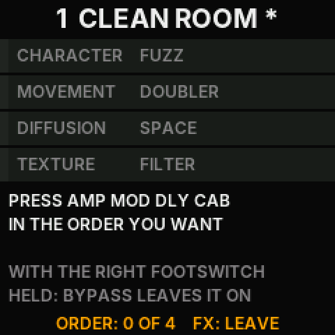
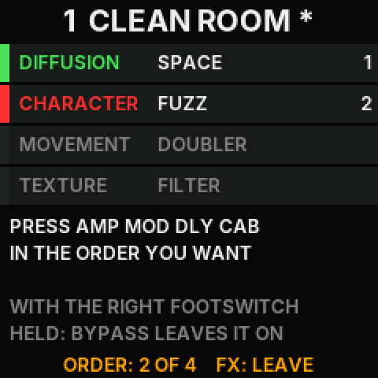
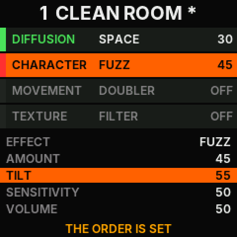
The order is part of the sound, and a preset keeps it. Factory presets 18 and 19 have orders of their own.
Drive one module with another, or push the whole chain
Goal: make a module hit the next one harder, or make the whole chain clip softly.
- Press AMP, then PUSH until the VOLUME line is lit.
- Turn the knob above 50. Character's output is now louder, so the modules after it are driven harder. An effect that compresses or saturates, such as Squash or Cassette, changes with the level it gets.
- For the whole chain: press HOME, PUSH twice for LEVEL, and turn it up. The output has a soft ceiling that starts at half of full scale: a loud chain is rounded off there.
Bypass, and the modules it leaves on
Goal: switch the effects off with your foot, but let the reverb ring on.
- Press the right footswitch. Every module that was on says BYP, and the guitar passes as it is. Press it again to engage.
- To leave a module on: press FX, hold the right footswitch, and press DLY. Diffusion's tile says STAYS ON. Let the footswitch go and press FX.
- Press the right footswitch now. Every module but Diffusion goes off, and Diffusion keeps sounding. The last line says BYPASS: SOME MODULES STAY ON.
- To undo it, do step 2 once more.
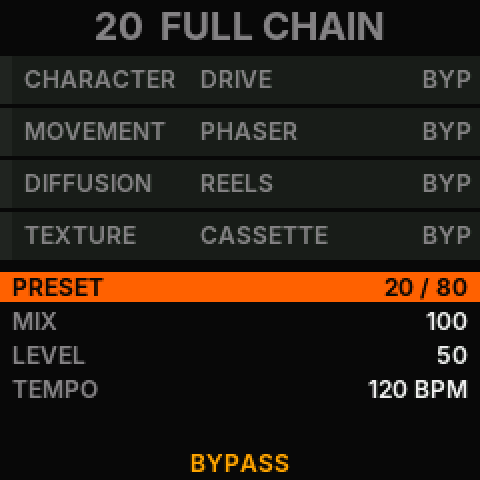
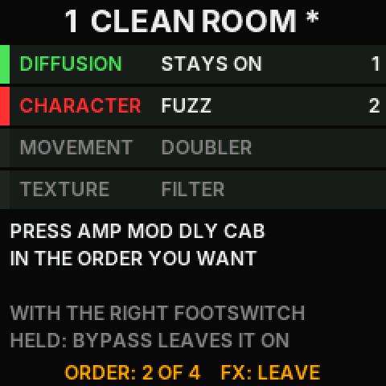
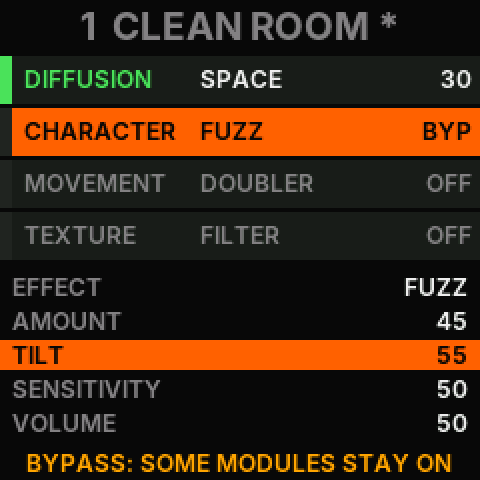
The choice is part of the sound and is saved with it. A module's own switch is separate: hold its button for 0.6 s.
Find a preset, and save your own
Goal: step through the sounds by foot, then keep a sound you made.
- Hold the right footswitch for 0.7 s. The rows become a list of presets, with the loaded one lit.
- Press the right footswitch for the next sound, the left one for the one before. Each loads at once.
- Press CAB for bank D, where the slots are empty, or turn the knob to any slot.
- Press PUSH to leave the list. Make your sound.
- Hold PUSH for 0.8 s. The last line says SAVED. The sound is now that slot's, and the pedal starts on it the next time.
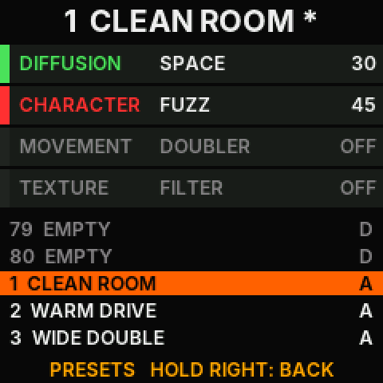
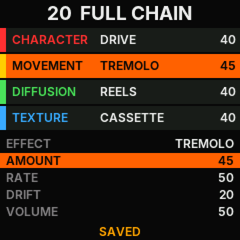
A change of preset drops what you did not save. The star after the name tells you that there is something to lose.
Tap a tempo
Goal: make the echo and the tremolo follow the song.
- Tap the left footswitch twice, a quarter note apart. REV does the same by hand.
- Press HOME: the TEMPO line shows the tempo in beats a minute.
- Turn RATE or TIME: with a tempo they choose a note value. Section 7 has the values.
- Hold REV for 0.8 s to go back to free time.
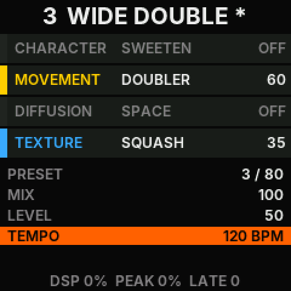
What the video also shows, and PALETTE does not do yet
- Recording a knob's movement and looping it. Not built.
- Capturing a loop by holding the left footswitch. Not built. Holding the left footswitch does nothing.
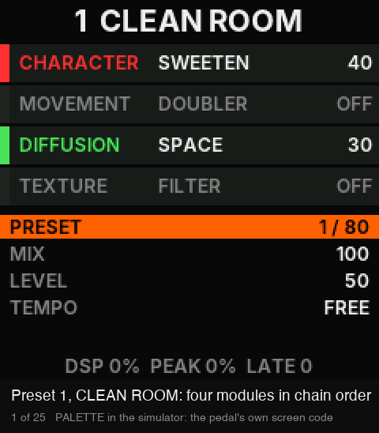
6. Presets
There are 80 slots in four banks of twenty, A to D. The first twenty have factory sounds until you save over them. A slot that was never saved and has no factory sound is EMPTY. A sound saved to an empty slot gets the name USER and the slot's number. Saving does not touch OpenPocket's presets, and OpenPocket does not touch these.
| Slot | Name | What is on, in the chain's order |
|---|---|---|
| 1 | CLEAN ROOM | Sweeten, Space |
| 2 | WARM DRIVE | Drive, Cascade |
| 3 | WIDE DOUBLE | Doubler, Squash |
| 4 | TAPE ECHO | Reels, Cassette |
| 5 | BIG SPACE | Sweeten, Vibrato, Space |
| 6 | FUZZ WALL | Fuzz, Space |
| 7 | HOWLER | Howl, Phaser, Cascade |
| 8 | SLOW SWELL | Swell, Space |
| 9 | PHASE 12 | Phaser at twelve stages, Squash |
| 10 | TREM CHOP | Drive, Tremolo |
| 11 | OCTAVE UP | Pitch an octave up, Cascade |
| 12 | SUB DRIFT | Pitch an octave down with DRIFT, Filter as a low-pass |
| 13 | COLLAGE | Doubler, Collage |
| 14 | BACKWARDS | Vibrato, Reverse |
| 15 | WORN TAPE | Sweeten, Cassette |
| 16 | BAD MOTOR | Reels, Broken |
| 17 | BAD SIGNAL | Cascade, Interference |
| 18 | ECHO>FUZZ | Cascade, then Fuzz: Diffusion is first in the chain |
| 19 | SPACE>TREM | Space, then Tremolo: Diffusion is first in the chain |
| 20 | FULL CHAIN | Drive, Phaser, Reels, Cassette, at 120 beats a minute |
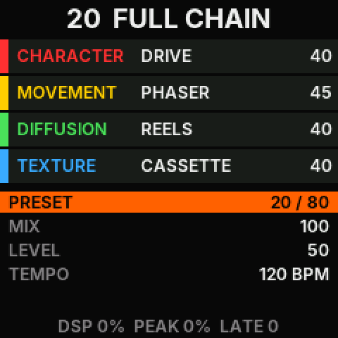
7. Tempo
A sound has a tempo or runs in free time. The tempo comes from two taps, from the TEMPO line, or from a MIDI clock while one runs. It is saved with the sound. With a tempo, these knobs choose note values:
| Effect | Knob | From 0 to 100 |
|---|---|---|
| Vibrato, Phaser, Tremolo | RATE | One cycle in four bars, two bars, one bar, a half note, a quarter, an eighth, an eighth triplet, a sixteenth |
| Cascade, Reels | TIME | A repeat every sixteenth, eighth triplet, eighth, dotted eighth, quarter |
| Collage | TIME | A loop of a sixteenth, an eighth, a quarter, a half note, one bar (1.96 s at most) |
| Reverse | none | Each backwards piece lasts a quarter note, halved until it is 0.6 s or less. TIME stays its speed |
In free time RATE goes from one cycle in five seconds to about ten a second, and the TIME of Cascade and Reels from 40 ms to one second.
8. MIDI
PALETTE listens on USB MIDI. Its map is the reference instrument's, so a controller set up for that one works.
| Message | Meaning |
|---|---|
| Program Change 0 to 79 | Presets 1 to 80 |
| Control Change 64, 66, 68, 70 | TILT, RATE, TIME, MIX |
| Control Change 65, 67, 69, 71 | AMOUNT of Character, Movement, Diffusion, Texture |
| Control Change 72, 74, 76, 78 | SENSITIVITY, Movement's DRIFT, Diffusion's DRIFT, LEVEL |
| Control Change 73, 75, 77, 79 | VOLUME of Character, Movement, Diffusion, Texture |
| Control Change 16 to 19 | The effect of Character, Movement, Diffusion, Texture: 0 to 109 in five steps of 22, and from 110 the module off |
| Control Change 103 to 106 | A module off (below 64) and on |
| Control Change 91 | Bypass (below 64) and engage |
| Control Change 92 | Below 32 every module bypassed; below 64 bypass as the footswitch does it; from 64 engaged |
| Control Change 84 | The filter's STYLE: low-pass (below 44), tilt (below 88), high-pass |
| Control Change 93 | A tap |
| Clock, Start, Stop | The tempo while the clock runs. Half a second without a clock, or a Stop, gives the sound its own tempo back |
A knob value from 0 to 127 becomes 0 to 100.
9. Safe mode and the way back
- Overload. If the sound stays above 85 % load, the pedal bypasses it and the last line says OVERLOAD. The guitar passes.
- Safe mode. After a crash, or a start that did not finish, the next start is in safe mode: the last line says SAFE MODE, the effects stay off, the guitar passes, and USB answers. From there, install again or go back to OpenPocket.
- Back to OpenPocket. Run
node tools/op.mjs flash --confirm-flash, or open the installer page and press "Back to OpenPocket". OpenPocket's presets, amp models and cabinets are still there, and PALETTE's presets stay for the next time. - Everything else about install and recovery is in ALT-FIRMWARE.md. STARTER, the other alternative firmware, keeps its data in the same part of the flash as PALETTE, so a save on one replaces the other's sounds. Going back to the official firmware is its section 5.
10. Try it without a pedal
node tools/op.mjs sim --app paletteopens a page with this screen and every control. Its Listen button plays a guitar loop through the firmware's own code.- The audio samples are guitar recordings through the engine on a computer and an amplifier simulation. They are not recordings of a pedal.
- PALETTE.md is the design note, and PALETTE-CONTROLS-REFERENCE.md says where these controls come from.